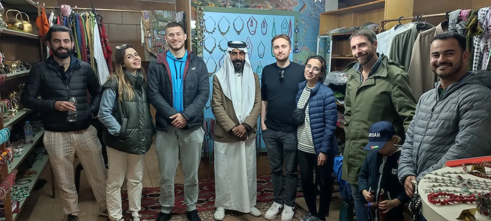
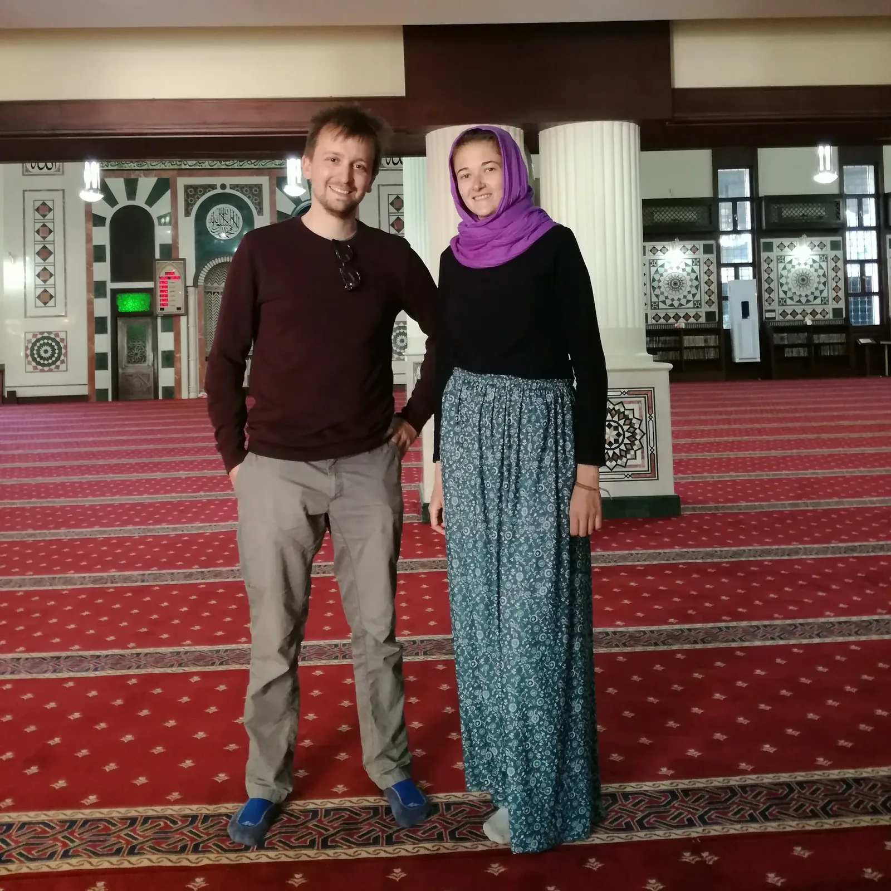
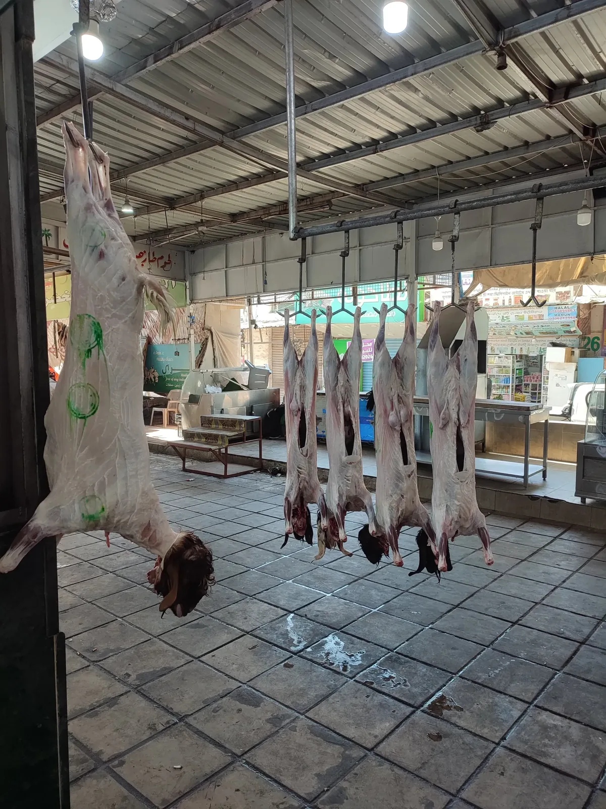

Overview
Discover the real Aqaba on a guided walking tour. Explore local markets, taste authentic street food, and uncover the city's rich history and culture with a local expert. This tour is designed to give you an authentic, immersive experience away from the typical tourist spots.
Quick Facts
| Duration | 2.5 Hours |
|---|---|
| Group Size | Max 12 participants |
| Language | English, Arabic |
| Difficulty | Easy (Moderate walking) |
| Inclusions | All food and drink tastings are included in the price. |
What You'll See & Taste
- Local Markets: Visit the bustling vegetable and spice markets to see daily life in Aqaba.
- Street Food Delights: Sample authentic local street food, including falafel, hummus, and traditional sweets.
- Historic Sites: Stop at key historical points to learn about Aqaba's past as a port city.
- Hidden Gems: Discover secret spots and local hangouts only known to residents.
Meet Your Guide

Local Expert Guide
Our guides are licensed local historians and lifelong residents of Aqaba. Their passion for local folklore and culture brings the city to life.
Gallery




Reviews
★★★★★
5.0/5.0 (Based on 312 reviews)
"Alex was fantastic! The tour was engaging, informative, and perfectly paced. Highly recommend for anyone visiting the city."